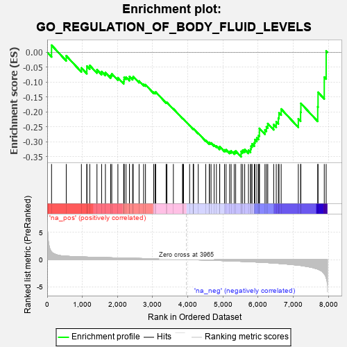
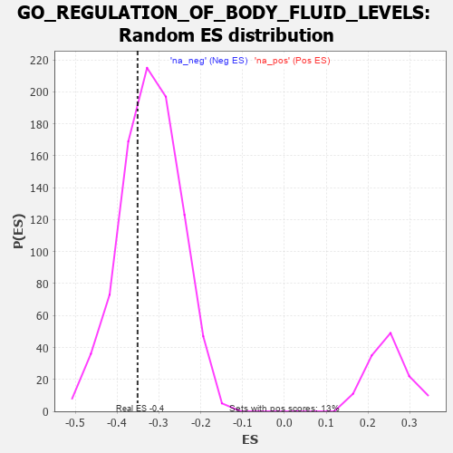

| | | Dataset | 7d |
| Phenotype | NoPhenotypeAvailable |
| Upregulated in class | na_neg |
| GeneSet | GO_REGULATION_OF_BODY_FLUID_LEVELS |
| Enrichment Score (ES) | -0.3509985 |
| Normalized Enrichment Score (NES) | -1.0948504 |
| Nominal p-value | 0.32646048 |
| FDR q-value | 0.7562786 |
| FWER p-Value | 1.0 |
Table: GSEA Results Summary

Fig 1: Enrichment plot: GO_REGULATION_OF_BODY_FLUID_LEVELS
Profile of the Running ES Score & Positions of GeneSet Members on the Rank Ordered List
| PROBE | GENE SYMBOL | GENE_TITLE | RANK IN GENE LIST | RANK METRIC SCORE | RUNNING ES | CORE ENRICHMENT | | 1 | ADCY8 | | | 124 | 1.418 | 0.0239 | No |
| 2 | SRF | | | 542 | 0.615 | -0.0117 | No |
| 3 | MTX1 | | | 973 | 0.489 | -0.0525 | No |
| 4 | SRC | | | 1128 | 0.459 | -0.0592 | No |
| 5 | FIBP | | | 1129 | 0.458 | -0.0464 | No |
| 6 | RCOR1 | | | 1211 | 0.445 | -0.0442 | No |
| 7 | P2RY1 | | | 1416 | 0.407 | -0.0587 | No |
| 8 | CSN3 | | | 1548 | 0.383 | -0.0645 | No |
| 9 | CSN2 | | | 1656 | 0.363 | -0.0679 | No |
| 10 | COPA | | | 1806 | 0.336 | -0.0774 | No |
| 11 | GATA4 | | | 1837 | 0.330 | -0.0720 | No |
| 12 | RAF1 | | | 2011 | 0.303 | -0.0854 | No |
| 13 | DDR1 | | | 2176 | 0.280 | -0.0984 | No |
| 14 | SYK | | | 2186 | 0.278 | -0.0917 | No |
| 15 | C1QBP | | | 2189 | 0.278 | -0.0842 | No |
| 16 | CREB1 | | | 2243 | 0.269 | -0.0834 | No |
| 17 | ANO6 | | | 2339 | 0.255 | -0.0883 | No |
| 18 | DOCK8 | | | 2341 | 0.254 | -0.0813 | No |
| 19 | MET | | | 2430 | 0.240 | -0.0858 | No |
| 20 | KDM1A | | | 2447 | 0.237 | -0.0812 | No |
| 21 | VAV3 | | | 2614 | 0.210 | -0.0963 | No |
| 22 | LMAN1 | | | 2743 | 0.192 | -0.1072 | No |
| 23 | AQP3 | | | 2796 | 0.184 | -0.1086 | No |
| 24 | TLN1 | | | 3030 | 0.145 | -0.1341 | No |
| 25 | PROS1 | | | 3070 | 0.141 | -0.1351 | No |
| 26 | HDAC1 | | | 3086 | 0.138 | -0.1331 | No |
| 27 | PPAT | | | 3382 | 0.091 | -0.1680 | No |
| 28 | MED1 | | | 3405 | 0.089 | -0.1683 | No |
| 29 | MAPK3 | | | 3589 | 0.062 | -0.1897 | No |
| 30 | ITPK1 | | | 3851 | 0.020 | -0.2222 | No |
| 31 | DGKQ | | | 3856 | 0.020 | -0.2222 | No |
| 32 | DGKZ | | | 3879 | 0.015 | -0.2246 | No |
| 33 | ATG5 | | | 4051 | -0.016 | -0.2458 | No |
| 34 | WNK3 | | | 4153 | -0.034 | -0.2576 | No |
| 35 | HNF4A | | | 4157 | -0.034 | -0.2571 | No |
| 36 | HPS5 | | | 4164 | -0.036 | -0.2568 | No |
| 37 | USF1 | | | 4296 | -0.059 | -0.2718 | No |
| 38 | ILK | | | 4510 | -0.096 | -0.2961 | No |
| 39 | ADTRP | | | 4612 | -0.120 | -0.3055 | No |
| 40 | GATA3 | | | 4614 | -0.120 | -0.3022 | No |
| 41 | ITPR1 | | | 4661 | -0.130 | -0.3044 | No |
| 42 | FBLN1 | | | 4748 | -0.149 | -0.3112 | No |
| 43 | P2RX4 | | | 4813 | -0.161 | -0.3148 | No |
| 44 | VAMP8 | | | 4905 | -0.179 | -0.3213 | No |
| 45 | CAPZB | | | 4908 | -0.179 | -0.3165 | No |
| 46 | PDPK1 | | | 5043 | -0.207 | -0.3277 | No |
| 47 | DRD2 | | | 5088 | -0.221 | -0.3271 | No |
| 48 | ENPP4 | | | 5189 | -0.245 | -0.3329 | No |
| 49 | USF2 | | | 5232 | -0.252 | -0.3312 | No |
| 50 | CD9 | | | 5319 | -0.277 | -0.3343 | No |
| 51 | ITPR3 | | | 5361 | -0.288 | -0.3315 | No |
| 52 | TFPI2 | | | 5516 | -0.324 | -0.3419 | Yes |
| 53 | VDR | | | 5517 | -0.325 | -0.3328 | Yes |
| 54 | EHD1 | | | 5560 | -0.336 | -0.3288 | Yes |
| 55 | VPS45 | | | 5618 | -0.350 | -0.3262 | Yes |
| 56 | DGKI | | | 5725 | -0.384 | -0.3289 | Yes |
| 57 | TRPC6 | | | 5784 | -0.401 | -0.3250 | Yes |
| 58 | ADA | | | 5798 | -0.405 | -0.3153 | Yes |
| 59 | ANXA7 | | | 5827 | -0.413 | -0.3073 | Yes |
| 60 | CDO1 | | | 5892 | -0.432 | -0.3033 | Yes |
| 61 | DOCK1 | | | 5908 | -0.438 | -0.2930 | Yes |
| 62 | SH2B1 | | | 5963 | -0.459 | -0.2870 | Yes |
| 63 | XBP1 | | | 6011 | -0.475 | -0.2796 | Yes |
| 64 | TRPC3 | | | 6035 | -0.483 | -0.2691 | Yes |
| 65 | RAC1 | | | 6036 | -0.484 | -0.2555 | Yes |
| 66 | ATP7B | | | 6194 | -0.535 | -0.2604 | Yes |
| 67 | CDC42 | | | 6236 | -0.548 | -0.2503 | Yes |
| 68 | STK39 | | | 6274 | -0.563 | -0.2392 | Yes |
| 69 | UMPS | | | 6442 | -0.637 | -0.2426 | Yes |
| 70 | TRPV4 | | | 6515 | -0.668 | -0.2330 | Yes |
| 71 | P2RX5 | | | 6576 | -0.699 | -0.2211 | Yes |
| 72 | VWF | | | 6593 | -0.706 | -0.2033 | Yes |
| 73 | RAB5A | | | 6655 | -0.741 | -0.1903 | Yes |
| 74 | CFTR | | | 7143 | -1.030 | -0.2233 | Yes |
| 75 | MFN2 | | | 7208 | -1.081 | -0.2011 | Yes |
| 76 | KLKB1 | | | 7216 | -1.090 | -0.1715 | Yes |
| 77 | ADCY1 | | | 7695 | -1.752 | -0.1831 | Yes |
| 78 | ADCY9 | | | 7704 | -1.783 | -0.1342 | Yes |
| 79 | FYN | | | 7881 | -2.622 | -0.0832 | Yes |
| 80 | ARRB1 | | | 7935 | -3.377 | 0.0046 | Yes |
Table: GSEA details [plain text format]

Fig 2: GO_REGULATION_OF_BODY_FLUID_LEVELS: Random ES distribution
Gene set null distribution of ES for GO_REGULATION_OF_BODY_FLUID_LEVELS